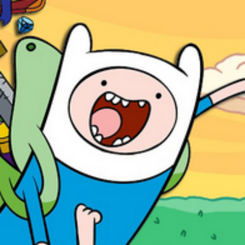

 Meet Finn the Chatbot
This chatbot was created using the Watson API, nodeJS in the backend, and the newest Angular 7 in all its glory. It was designed to interact with the user and give honest and yet funny answers about Lucas, the creator.
Lucas, the creator, is a computer science student of Universidade Federal da Bahia. Interested in Games and Developing. Active user of online courses in Java and Frontend Design. Can speak Portuguese, English and a little German.